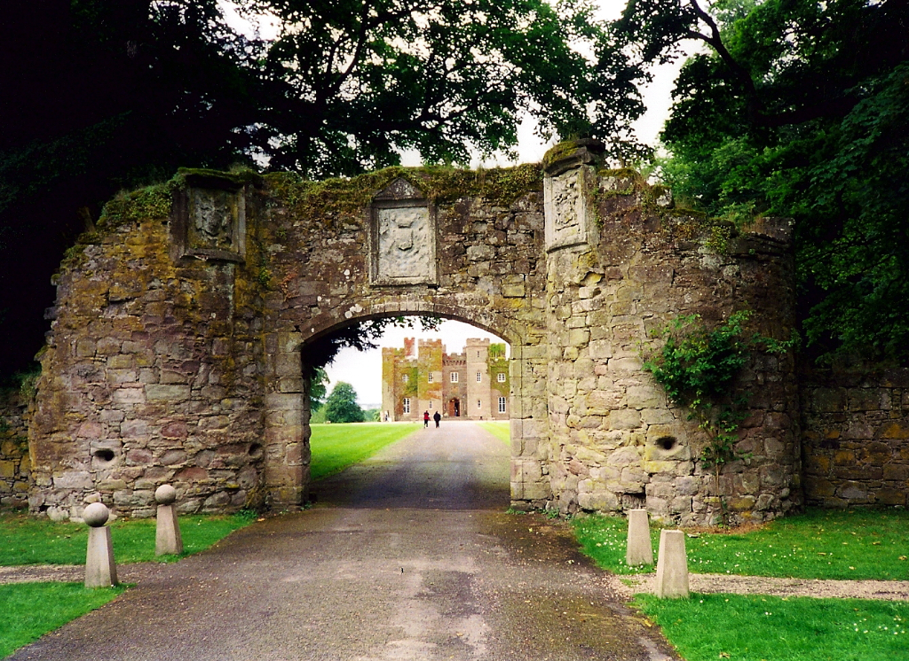

Welcome to Perth!
Located in the heart of Scotland the city of Perth has something for everyone.
Whether it's the rich history, the beautiful countryside, or the vibrant city life there is plenty to experience in Perth.
Known as "the gateway to the highlands" Perth's location on the banks of the river Tay leaves it just over an hours drive from both Glasgow and Edinburgh, and less than an hour to get into the beautiful Scottish Highlands.
This makes the city the perfect stop on trips across Scotland, as well as a fantastic base from which to explore the country.
Perth itself has much to offer. The city, home to almost 50,000 people, boasts a shopping centre, theatre, and cinema. The Blackwatch museum and Scone palace exemplify the cities deep roots in Scottish history. Outside the city there are countless opportunities for scenic walks and outdoor adventure.
Discover our history
From the royal court and "The Stone of Destiny" to Sir Walter Scott and the Fair Maid of Perth, the city has a fascinating history going back over 800 years
Our history
